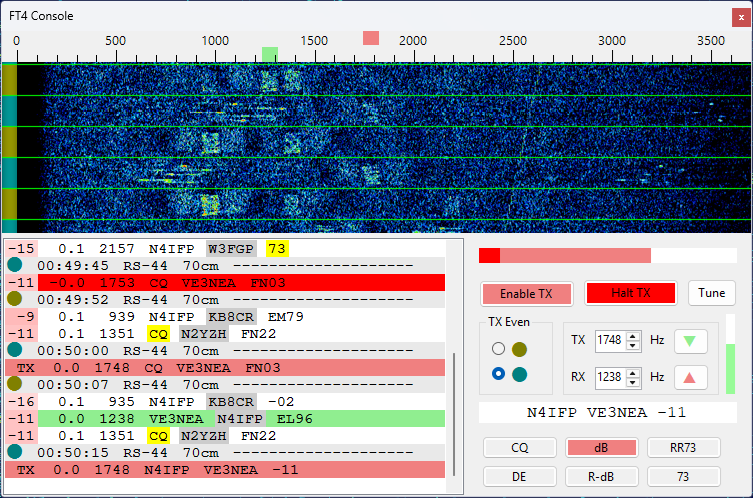
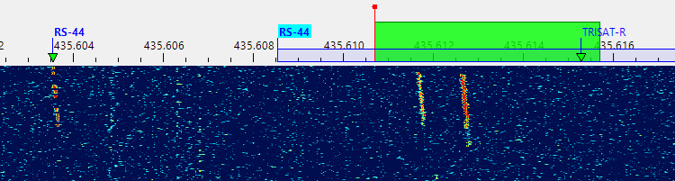
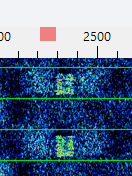
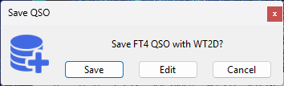

FT4 Console Panel
FT4 Console provides a streamlined, satellite‑optimized interface for conducting FT4 QSOs via satellites with linear transponders (e.g., RS‑44, AO‑73, JO‑97). While similar results can be obtained by running two instances of WSJT‑X side by side with SkyRoof, the Console removes the need for external programs and simplifies the workflow. It offers satellite‑specific features not available in general‑purpose FT4 software, and an intuitive user interface that improves efficiency and usability.
Be sure to configure the FT4 Console settings before you start using the FT4 Console panel.
User Interface

Audio Waterfall Diaplay
Click with the left mouse button on the waterfall or on the frequency scale to set RX and TX audio tones:
- click - set the RX tone;
- Shift-click - set the TX tone;
- Ctrl-click - set the RX and TX tones.
Move the mouse cursor over an FT4 signal trace on the waterfall to see sender's callsign.
Message List
The message list shows transmitted and received messages, including your own messages coming back from the satellite.
The list auto scrolls as the new messages are added. To disable auto-scrolling, for example, when looking at the old messages, just scroll the list up manually. To resume auto-scrolling, scroll it down to the last entry.
When the mouse cursor is moved over the list, auto-scrolling is temporarily disabled to prevent clicks on a wrong entry. The frozen status is indicated by a blue frame around the list panel. The list un-freezes when you click on an entry or move the cursor out of the list, and when the cursor has not been moving for 2 seconds.
When the mouse cursor is over a received message, a label on the waterfall display indicates the frequency of the decoded signal and sender's callsign.
Right-click on the message list to open the popup menu. This menu has commands to clear the list and to scroll down to the bottom.
The first column in the received messages is the SNR of the received signal. It is color-coded, with weak signals represented with pale colors and strong ones with bright colors.
Sender's callsigns are color-highlighted based on their status from the logging interface. See QSO Entry for information about callsign colors.
Control Area
Enable TX button - enable transmissions;
Halt TX button - abort current transmission;
Tune button - transmit a tone for tuning. This button works only when Enable TX is turned off. Similarly, the Enable TX works only when Tune is off;
TX Odd/Even - select odd or even time slots for transmission;
TX #### Hz - transmitted audio tone;
RX #### Hz - primary received audio tone;
up and down arrow buttons - set RX tone equal to TX tone or vice versa. The buttons are color-coded, e.g., if you click on a green arrow, the green maker on the frequency scale moves;
amplitude bar - shows the peak amplitude of the input audio, see the FT4 Console Settings section for details;
message text - the current message to be transmitted;
message buttons - allow you to select the message to transmit. A single click on a button changes the message immediately, even during the transmission. Only the messages applicable in the current stage of the QSO are enabled. The currently selected message is shwon in pink.
Here are the examples of the messages:
Run Sequence
| Button | Example |
|---|---|
| CQ | CQ VE3NEA FN03 |
| dB | AA0AA VE3NEA -10 |
| RR73 | AA0AA VE3NEA RR73 |
S&P Sequence
| Button | Example |
|---|---|
| DE | AA0AA VE3NEA FN03 |
| R-dB | AA0AA VE3NEA R-10 |
| 73 | AA0AA VE3NEA 73 |
Making Contacts
At the time of this writing RS-44 was the best choice for FT4 contacts, so we will use this satellite in the examples below. When the satellite rises above the horizon and you start receiving its signals, do a quick check:
verify your Downlink Manual Correction. This is easy to do with an SDR receiver: the label of the RS-44 CW beacon, shown on the left hand side in the screenshot below, should be aligned with its signal trace on the wideband waterfall display. If there is a mismatch, you can correct it as described in the Frequency Scale and Frequency Control sections;
check that the receiver (SDR or external) is tuned to the frequencies where the FT4 signals are present. Usually FT4 stations operate a few kHz above the lower end of the transponder passband. You can just drag your receiver passband (green rectangle) to the required frequency.

Now you can click on Tune or Enable TX to start transmitting. If all is good, you will receive your own signals back from the satellite:

The received signals are often slightly offset from the intended frequency (the pink mark on the scale), as shown above. This should be corrected by adjusting Uplink Manual Correction. You can do this manually in the Frequency Control widget, or automatically, by Ctrl-click'ing on your own received message (with red background by default) in the message list. Automatic correction works only if the error is less than 1 kHz. If it is greater than that, you have to find out the cause. Large frequency errors could be caused by bad SDR calibration, inaccurate system clock, old TLE data, wrong downlink offset correction, etc.
Wait until someone answers your CQ, or call another station by clicking on their message. A single click is enough, no need to double-click. The QSO sequence is followed automatically, and the Save QSO dialog pops up when the QSO is completed:

Click on Save to save the QSO , or click on Edit to load the QSO details in the QSO Entry form. See QSO Entry for information about editing and saving QSO.